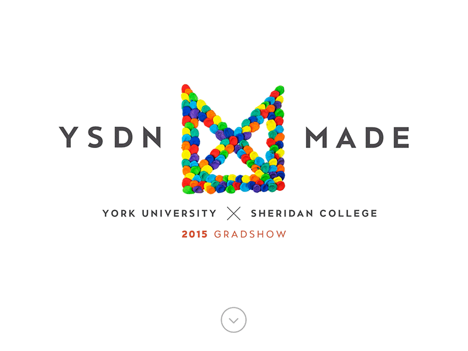
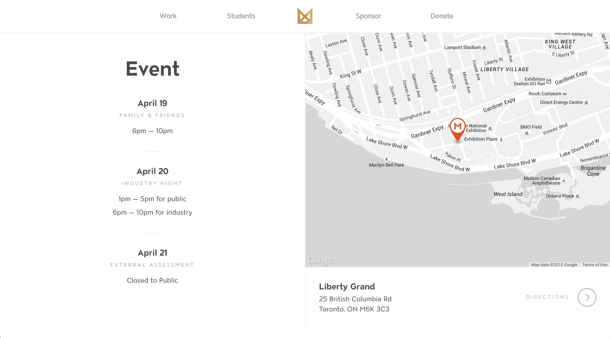
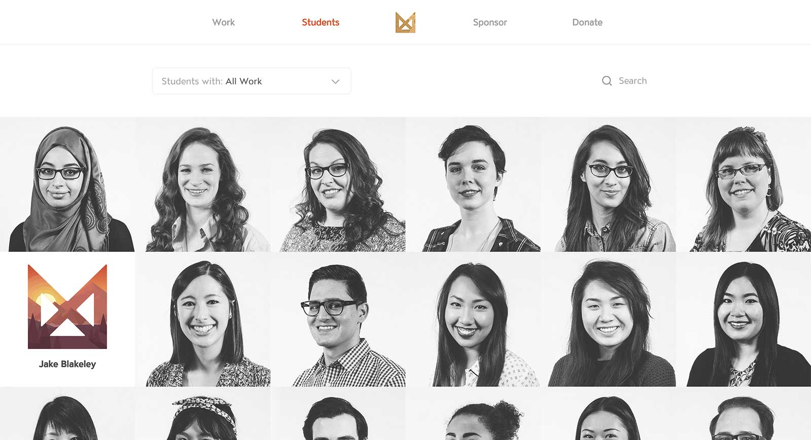
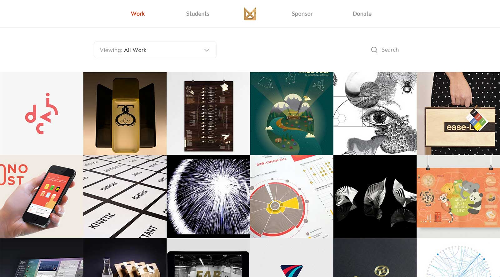
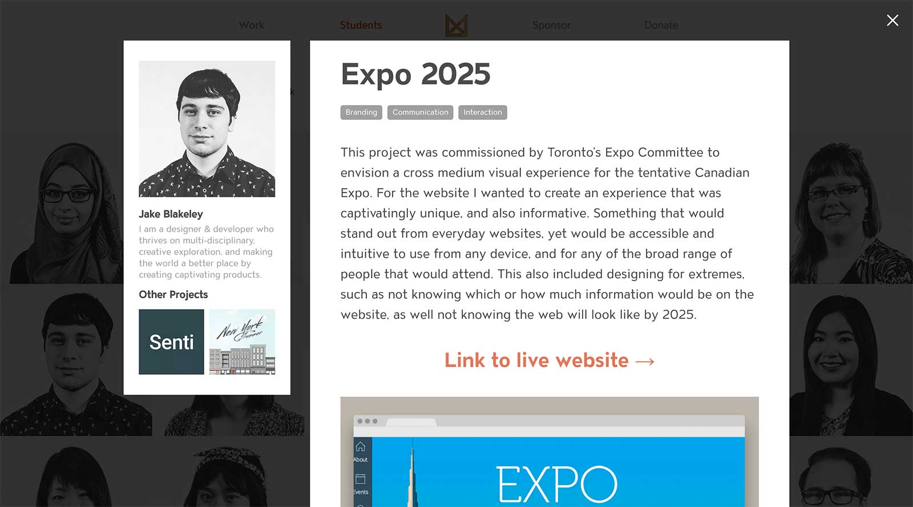

YSDN Made was the 2015 graduation show for the York/Sheridan design program, YSDN. The show was branded around the idea that as designers, no matter our discipline, we are generators, makers and synthesizers. We invent, create, and shape the world around us.
Together, with my team, we created a website that didn’t just reflect this core brand philosophy, but also helped to shape it. As a way to individualize and personalize the brand we decided that each student should make their own version of the “Made” logo. We further cemented this idea, by including each student’s logo on their portrait, as well as included all 100+ logos in the randomizing logo animation on the landing page introduction.
My personal role in the grad show was project manager of the web team. This included such core tasks as managing a team to design and build the website, managing how everyone presented and uploaded their work to the website, and facilitating communication between both my team and other teams. Some of my secondary roles included, being the lead developer of the website, managing the 100+ users and the website’s backend system, as well as assisting other teams with their web related projects.
   Credits:
Amanda Hoff — second logo in thumbnail
Kevin Witkowski — third logo in thumbnail
Amy Reynolds — fourth logo in thumbnail
Lucas Young — final logo in thumbnail
Back to Work